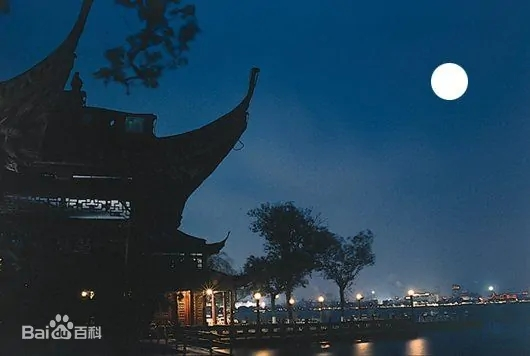

杭州概况
杭州市，简称“杭”，古称临安、钱塘，浙江省辖地级市、省会、副省级市、特大城市，杭州都市圈核心城市，国务院批复确定的浙江省经济、文化、科教中心，长江三角洲中心城市之一 。截至2022年，杭州市下辖10个市辖区、2个县，代管1个县级市，总面积16850平方千米，常住人口1237.6万人。
杭州市地处中国华东地区、浙江省北部、钱塘江下游、东南沿海、京杭大运河南端，是G60科创走廊中心城市，浙江省政府批复的环杭州湾大湾区核心城市。杭州市介于北纬29°11′—30°34′，东经118°20′—120°37′之间，市境西部属浙西丘陵区，东部属浙北平原，水网密布，物产丰富。杭州属亚热带季风气候，四季分明，雨量充沛。
杭州市是首批国家历史文化名城，著名的书香世家杭州厉氏家族的发源地，以“东南名郡”著称于世，跨湖桥遗址的发掘显示8000多年前，就有人类在此繁衍生息。距今5000多年前的良渚文化被称为“中华文明的曙光”。杭州自秦朝设县治以来，已有2200多年历史，五代吴越国和南宋王朝两代建都杭州。杭州人文古迹众多，西湖及其周边有大量的自然及人文景观遗迹，具代表性的有西湖文化、良渚文化、丝绸文化、茶文化，因风景秀丽，素有“人间天堂”的美誉。2016年二十国集团领导人第十一次峰会、2018年世界短池游泳锦标赛、2023年亚运会在杭州市举办。
2022年，杭州市实现地区生产总值18753亿元，人均地区生产总值152588元。
杭州历史文化
方言
杭州话，是吴语的一种，属于吴语太湖片。
杭州话，一般是指杭州主城区方言，属于吴语太湖片杭州小片，分布于杭州拱墅区、上城区、下城区、江干区、西湖区。杭州话是杭州历史的活化石。
南宋年间，开封及周边地区的北方军民随宋室大举南迁，定居临安。此后，清朝的八旗兵在杭州驻扎，时间长达200年以上。由于北方移民急剧增加，导致占人口优势的吴语与占政治优势的北方官话进行融合，这一特征在杭州城区内尤其突出。
杭州话有儿缀（“儿”字单独读出，非儿化），多用文读，这是和北方方言长期融合演变的产物，也是与临绍吴语、苕溪吴语的差异之处。杭州话语腔语调与周边临绍吴语无异，较大程度地受到了绍兴话的影响，杭州与绍兴的依存关系类似上海与苏州。
杭州市区话具有全浊音，四声齐全，清浊对立，这是隶属吴语的典型标志。
时光荏苒，如今大多数杭州人已经不会说杭州话了。在我的印象里，除了老一辈会说，身边基本没有人会说杭州话。因此尽管我从小在杭州长大，也基本听不懂杭州话，顶多会说一两个词。当老一辈的邻里故去，杭州话似乎也销声匿迹了。
宗教
杭州有佛教、道教、伊斯兰教、天主教、基督教五个宗教。佛教有灵隐寺，净慈寺，上天竺法喜讲寺，中天竺法净禅寺，下天竺法镜讲寺，韬光寺（灵隐山半山巢枸坞）。道教有抱朴道院。伊斯兰教有凤凰寺等。天主教有天主教堂11所：圣母无原罪大堂。基督教有39处堂点：崇一堂，思澄堂，天水堂，鼓楼堂，杭州基督教会城北堂，笕桥堂，杭州基督教下沙磐石堂，杭州崇一堂是全球最大的华人教堂
节会
钱江观潮节
“八月十八潮，壮观天下无”每年农历8月18日，在萧山钱江观潮度假村举行国际钱江观潮节。届时，游客不仅可以欣赏举世奇观钱江潮，更可参与一系列文化体育和旅游活动。
西湖博览会
西湖博览会最早创立于1929年，与1893年的“芝加哥博览会”、1900年的“巴黎博览会”和1927年的“费城博览会”一起扬名世界，并被公认为四大国际性的盛典。首届博览会总共展出国内外物品14.76万件，堪称当时中国物品的总汇。为纪念这场首开中国博览业先河的展会，2000年，杭州市政府决定重办西博会。
文化遗产
2009年，蚕桑丝织技艺、西泠印社“篆刻”列入联合国教科文组织“人类非物质文化遗产代表作”名录
2011年6月24日，杭州西湖文化景观被列入《世界遗产名录》
2014年6月22日中国大运河成功入选世界文化遗产名录。
2019年7月6日，良渚古城遗址成功入选世界文化遗产名录。次日，位于杭州瓶窑镇的良渚古城遗址公园正式有限开放
柳浪闻莺
|  |